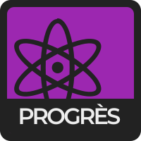

ÉCONOMIQUE
DIPLOMATIQUE
CIVIL
SOCIÉTAL



8values est, en substance, un quiz politique qui tente d'attribuer un pourcentage à huit valeurs politiques différentes. Une affirmation vous sera présentée, et vous y répondrez en donnant votre avis, de Tout à fait d'accord à Pas du tout d'accord ; chaque réponse modifie légèrement vos scores. À la fin du quiz, vos réponses seront comparées au maximum possible pour chaque valeur, ce qui vous donnera un pourcentage. Répondez honnêtement !
Le test comporte questions.
Il y a quatre axes indépendants (économique, diplomatique, civil et sociétal), chacun avec deux valeurs opposées. Les voici :
ÉGALITÉ
Les personnes ayant un score élevé en Égalité pensent que l'économie doit répartir la richesse de façon égale au sein de la population. Elles soutiennent généralement l'impôt progressif, les programmes sociaux et, à des valeurs élevées, le socialisme.
ÉCONOMIQUE
MARCHÉ
Les personnes ayant un score élevé en Marché pensent que l'économie doit viser une croissance rapide. Elles soutiennent généralement la baisse des impôts, la privatisation, la dérégulation et, à des valeurs élevées, le capitalisme de laissez-faire.
NATION
Les personnes ayant un score élevé en Nation sont patriotes et nationalistes. Elles prônent souvent une politique étrangère offensive et valorisent l'armée, la puissance, la souveraineté et, à des valeurs élevées, l'expansion territoriale.
DIPLOMATIQUE
MONDE
Les personnes ayant un score élevé en Monde sont cosmopolites et mondialistes. Elles prônent souvent une politique étrangère pacifique, axée sur la diplomatie, la coopération, l'intégration et, à des valeurs élevées, un gouvernement mondial.
LIBERTÉ
Les personnes ayant un score élevé en Liberté sont attachées à des libertés civiles fortes. Elles soutiennent généralement la démocratie et s'opposent à l'intervention de l'État dans la vie privée. Notez qu'il s'agit ici des libertés civiles, et non des libertés économiques.
CIVIL
AUTORITÉ
Les personnes ayant un score élevé en Autorité sont favorables à un pouvoir d'État fort. Elles soutiennent généralement l'intervention de l'État dans la vie privée, la surveillance gouvernementale et, à des valeurs élevées, la censure ou l'autocratie.
TRADITION
Les personnes ayant un score élevé en Tradition croient aux valeurs traditionnelles et au strict respect d'un code moral. Sans que ce soit systématique, elles sont généralement religieuses et défendent le statu quo ou le statu quo ante.
SOCIÉTAL
PROGRÈS
Les personnes ayant un score élevé en Progrès croient au changement social et à la rationalité. Sans que ce soit systématique, elles sont généralement sans religion ou athées, et soutiennent l'action environnementale ainsi que la recherche scientifique et technologique.
En plus de vous situer sur les huit valeurs, le quiz tente aussi de vous associer à une idéologie politique. Cette fonction est encore en développement et bien moins précise que les valeurs et les axes : ne la prenez pas trop au sérieux. Si vous n'êtes pas d'accord avec l'idéologie attribuée, vous pouvez écrire (en anglais) à l'équipe d'origine de 8values à eightvalues@gmail.com en indiquant vos scores, l'idéologie attribuée et celle qui vous correspond selon vous, pour l'aider à ajuster le système. Merci !
¯\_(ツ)_/¯
Pour toute suggestion ou critique constructive, vous pouvez écrire (en anglais) à eightvalues@gmail.com ou ouvrir une issue sur la page GitHub du projet original : Page GitHub